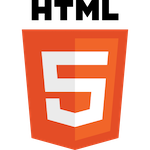
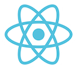

A little bit about myself.
A little bit about myself.
I am 27 years old. I am from Poland, currently living in Berlin since more than 10 years. I'm married and have a 3 years old son. I love everything about IT and software engineering. I started to learn programming already in 2020, but because of my carrer shifts and becoming a dad I had not always the time to learn as much as I wanted. At present I am learning almost every day at least an hour and I am craving for more! Front-end development is what catched me up. I love to see what is happening with the code that I am writing.
| Language skills: | ||
|---|---|---|
| Polish | 100% | |
| German | 90% | |
| English | 75% |
Technologies I use to develop websites:
|  | |
|  |
I learn new things at a fast pace and I am not afraid of new adventures to the world of programming and new challenges in order to get to know new technology. I am curious about everything that is new and I am looking for many solutions to one problem.